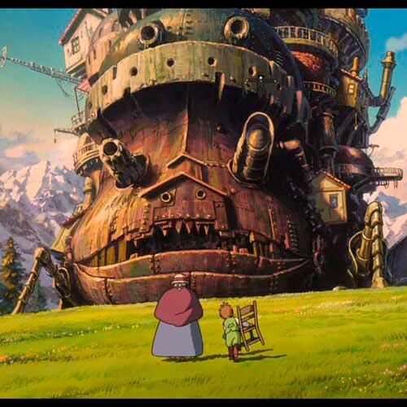

O castelo animado é um longa animado do diretor Hayao Miyazaki que retrata a história de Sophie, uma garota que é transformada em uma mulher de 90 anos pela maldição de uma bruxa, e Howl (Uivo), um lindo feiticeiro que está envolvido em meio a uma guerra com o país vizinho.
Baseado no romance "The Wizard Howl and the Fire Devil", da autora britânica Diana Wynne Jones, o filme foi lançado em 2004 e foi o segundo filme de maior bilheteria de todos os tempos na época. Foi um filme de sucesso que mais tarde acabou levando a indicação do Oscar em 2006 e prêmios como o Nebula Awards 2007 como melhor roteiro.
O filme atraiu 1,1 milhões de espectadores e ganhou cerca de 1,5 bilhões de ienes nas bilheterias, tornando-o a maior abertura para um filme japonês naquele ano e tem permanecido popular desde então e dentre os filmes do estúdio Ghibli continua sendo o favoritos de muitas pessoas.
Indicado ao oscar pela categoria de melhor animação.
Prêmio Saturno 2006
Indicado ao prêmio saturno pela categoria de melhor filme animação.
Prêmio Nebula 2007
Vencedor do prêmio nebula pela categoria de melhor roteiro.

História e Ambientação
A história se passa no século XIX na Europa, em um mundo onde magia e tecnologia andam juntas, um ambiente fantástico que traz elementos de realidade.
Sophie, uma menina de 18 anos que trabalha como costureira na loja de chapéus da família, é amaldiçoada por uma bruxa, ela é transformada em uma mulher de 90 anos.
Ela é visitada por Howl, um belo feiticeiro que tem o boato de poder ganhar o coração de uma jovem mulher. Os dois vivem uma estranha vida juntos no castelo de Howl, o Castelo Animado, que é temido por muitos por sua aparência feia. Com o tempo, Sophie e Howl acabam se entendendo, noo entanto, a sombra da guerra se arrasta na frente deles e eles têm que enfrentar muitas dificuldades.
Em termos gerais esta é a historia de O castelo Animado, mas a guerra é uma grande parte da segunda metade do longa, diferente do romance em que foi baseado. O filme é também sobre uma historia de amor à guerra.